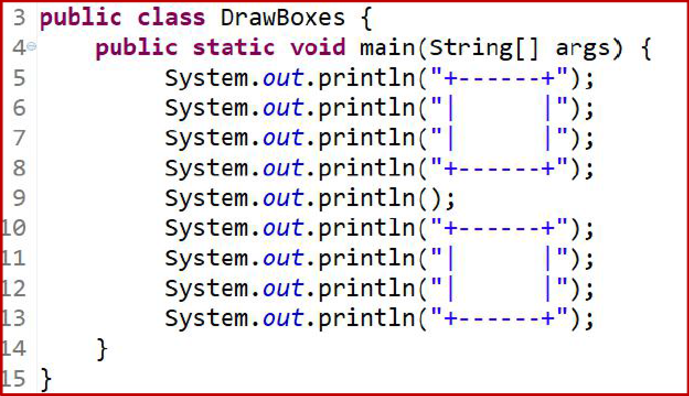
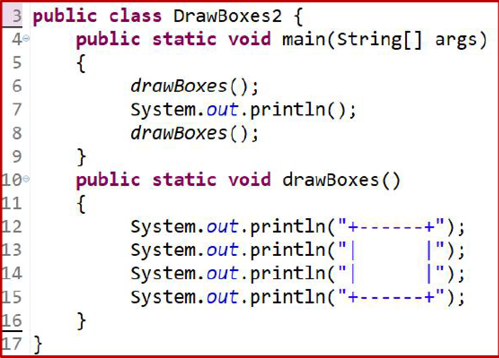
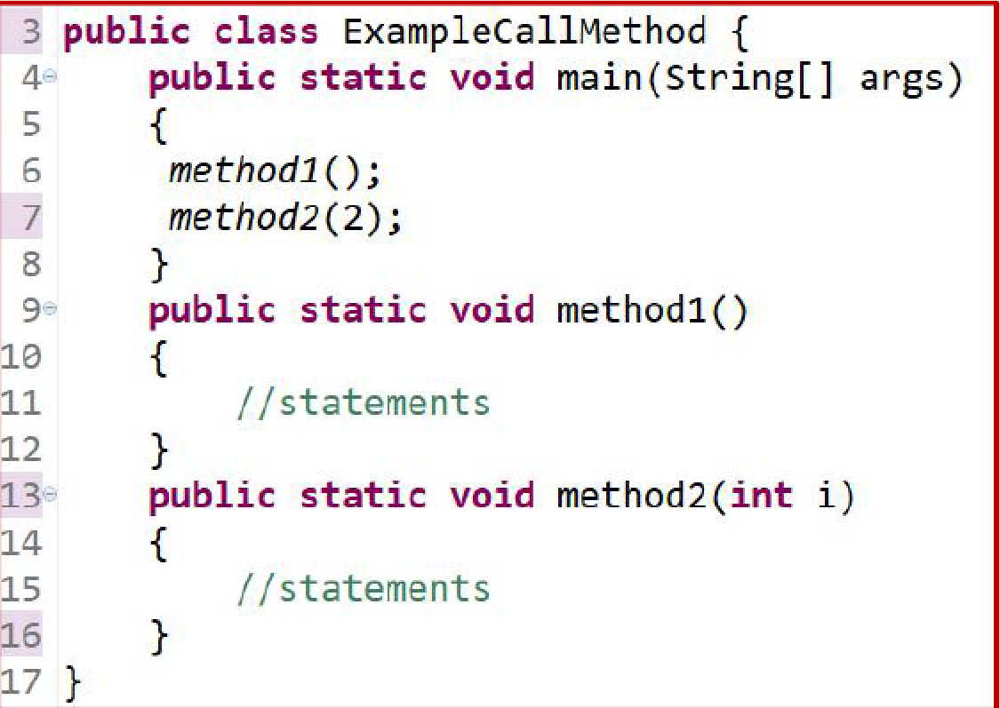
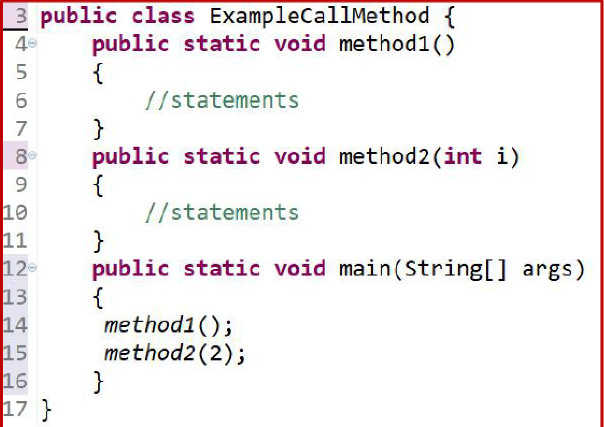

Chapter 5 Method
Learning Object
Difining Methods
Call Methods
Variable Scope
Define Method
The process of producing a program in stages, adding new function at each stage. A key feature of each iterative step is that you can test it to make sure that piece works before moving on.
Compare using method and not using method
No Method Using

Method Using

The structure of writing method


Congratulations, you have finished Chapter 5!!
Back
HomePage
Next